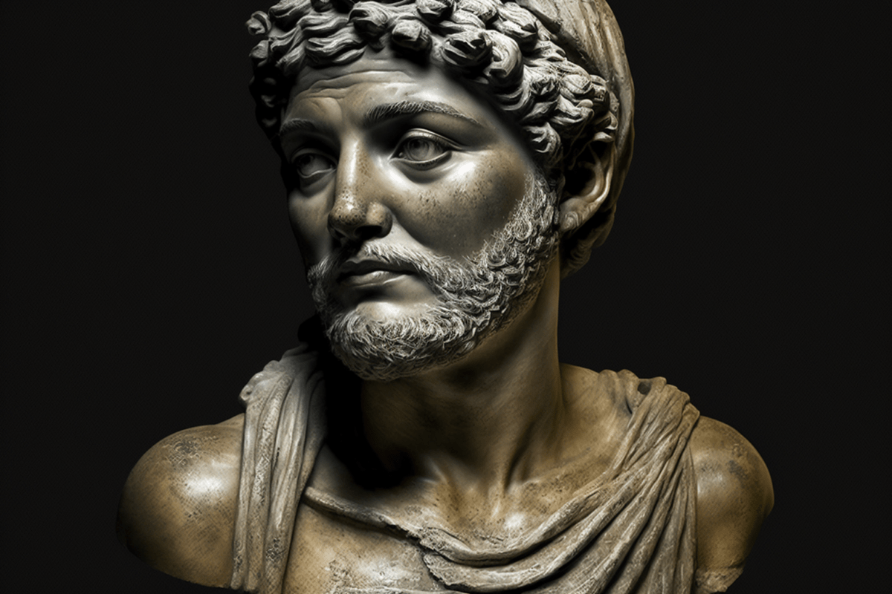

Bienvenue sur notre site !
Nous sommes heureux de vous accueillir sur ce site dédié à l'œuvre intemporelle de ÉsopeÉsope, fabuliste de l'Antiquité grecque, est connu pour ses récits moraux, portés par des animaux, qui continuent d'inspirer la littérature et la culture populaire., un fabuliste de l'Antiquité dont les fables nous transmettent des leçons de sagesse et de moralité.
Dans ce site, vous découvrirez deux de ses fables les plus célèbres :
- Du ChienUn chien est un mammifère domestique, fidèle et intelligent. et de son Image : Cette fable raconte l'histoire d'un chien qui, traversant une rivière, voit son reflet dans l'eau et croit que c'est un autre morceau de viande. Poussé par la gourmandise, il lâche son propre repas pour tenter de saisir l'ombre, mais il finit par tout perdre. La morale de cette fable nous enseigne qu'il vaut mieux se contenter de ce que l'on a plutôt que de courir après ce que l'on n'a pas.
- Du LoupUn loup est un carnivore sauvage, membre de la famille des canidés, proche du chien, vivant généralement en meute. et de la Grue. : Un loup, ayant un os coincé dans la gorge, promet une récompense à la grue si elle l'aide à le retirer. Une fois l'os retiré, le loup refuse de tenir sa promesse et se moque de la grue. Cette fable nous montre que ceux qui sont déjà cruels peuvent ne pas honorer leurs engagements, et il est souvent dangereux d'aider ceux qui sont de mauvaise foi.
Naviguez entre les articles ci-dessous pour lire ces fables et en tirer les leçons de vie qu'elles véhiculent.